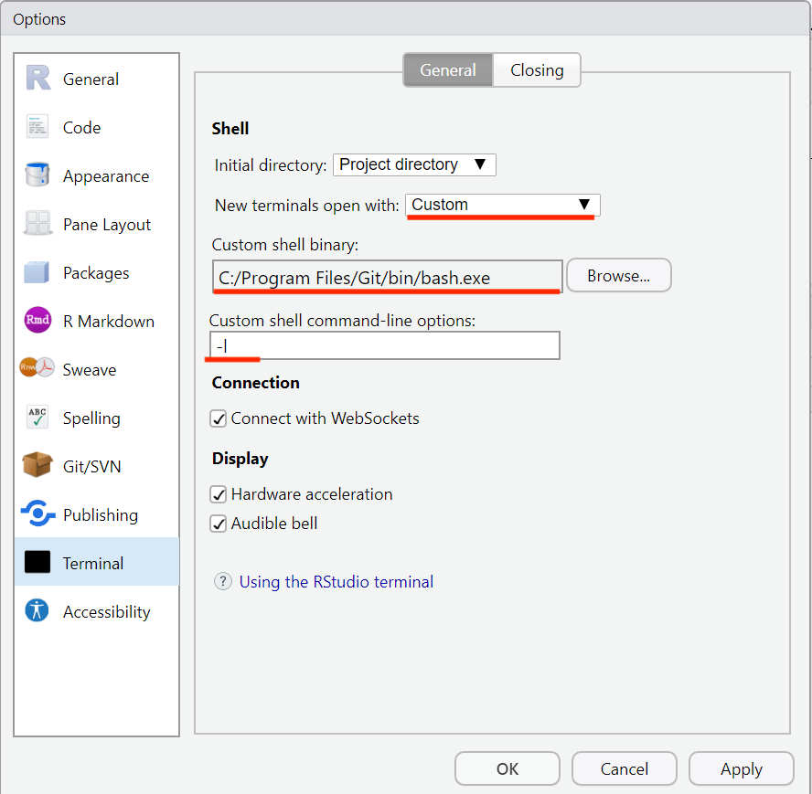
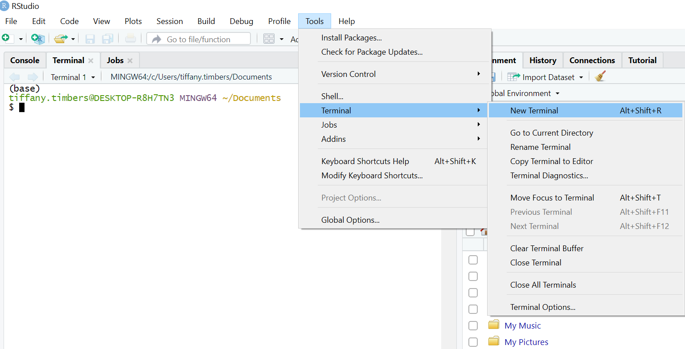

Appendix
Contents
Appendix#
Keeping your fork up to date with the main GitHub repository#
In this course you will be using a Fork-Pull Request workflow on GitHub, where the main GitHub repository is under the UBC-MDS organization and you have your own fork off of that. You will send your contributions from your own fork to the main repository as a pull request, and another team member will review and accept them.
Inadvertently, your fork will fall behind the main repository in the UBC-MDS organization. Here’s how you catch your repository back up:
The first time you need to catch up, you have to tell your computer where the upstream repository (here the one in the UBC-MDS organization) is:
git remote add upstream <original_repo_URL>
Then to catch up this time (and any other time) you type:
git fetch upstream
git merge upstream/main
These two commands together are like a git pull from the repo you forked. And will update the repository on your laptop. To update your fork of the repository on GitHub.com you will need to push:
git push
VS Code settings#
Recommended VS Code settings from Tom:
{
"workbench.settings.editor": "json",
"python.linting.flake8Enabled": true,
"python.linting.pylintEnabled": false,
"workbench.settings.openDefaultSettings": true,
"workbench.settings.useSplitJSON": true,
"workbench.settings.openDefaultKeybindings": true,
"editor.formatOnSave": true,
"python.formatting.provider": "black",
"jupyter.sendSelectionToInteractiveWin
}
Using Python in RStudio#
Mac & Linux users#
You can now use RStudio as an effective Python IDE. To do so, follow these steps after installing miniconda:
Install the {reticulate} package:
install.packages("reticulate")Install the {png} package (a dependency of reticulate that is not well managed yet):
install.packages("png")Find your path to miniconda by typing
which pythonin a terminal (Git Bash on Windows) outside of RStudioSpecify that {reticulate} should use the miniconda version of Python in your
.Rprofilefile:
type
usethis::edit_r_profileinto the R console inside RStudio, and an.Rprofilefile from your HOME directory should open in RStudioadd this to your
.Rprofilefile:Sys.setenv(RETICULATE_PYTHON = "path_to_miniconda's_python")replacing"path_to_miniconda's_python"with the path to your miniconda Python
In terminal type
code ~/.bash_profileand add the lineexport PATH="/opt/miniconda3/bin:$PATH", replacing/opt/miniconda3/binwith the path to the folder containing your miniconda Python (be careful not to includepythonat the end of this path).Restart R!
Start using Python in RStudio by typing
repl_python()in the R console, or running a line of Python code from a Python script from the RStudio editor by Cntrl + enter. Or by running scripts from the terminal inside RStudio.
Windows users#
Install the {reticulate} package:
install.packages("reticulate")Install the {png} package (a dependency of reticulate that is not well managed yet):
install.packages("png")Find your path to miniconda by typing
which pythonin a terminal (Git Bash on Windows) outside of RStudioSpecify that {reticulate} should use the miniconda version of Python in your
.Rprofilefile:
type
usethis::edit_r_profileinto the R console inside RStudio, and an.Rprofilefile from your HOME directory should open in RStudioadd this to your
.Rprofilefile:Sys.setenv(RETICULATE_PYTHON = "path_to_miniconda's_python")replacing"path_to_miniconda's_python"with the path to your miniconda Python. In Windows, you need\\instead of a\to separate the directories, for example my path here would be:C:\\Users\\tiffany.timbers\\miniconda3\\python.exe.
Open Global Options in RStudio and in the Terminal sub-menu, select “Custom” as the “New terminals to open with” option, and add the path to GitBash (should be something like
C:/Program Files/Git/bin/bash.exe) as the “Custom shell binary” option. Finally set-l(lower case L) as the option for “Custom shell command-line options”.


Restart R! Open R and close the terminal tab. Open a new terminal.


Start using Python in RStudio by typing
repl_python()in the R console, or running a line of Python code from a Python script from the RStudio editor by Cntrl + enter. Or by running scripts from the terminal inside RStudio.